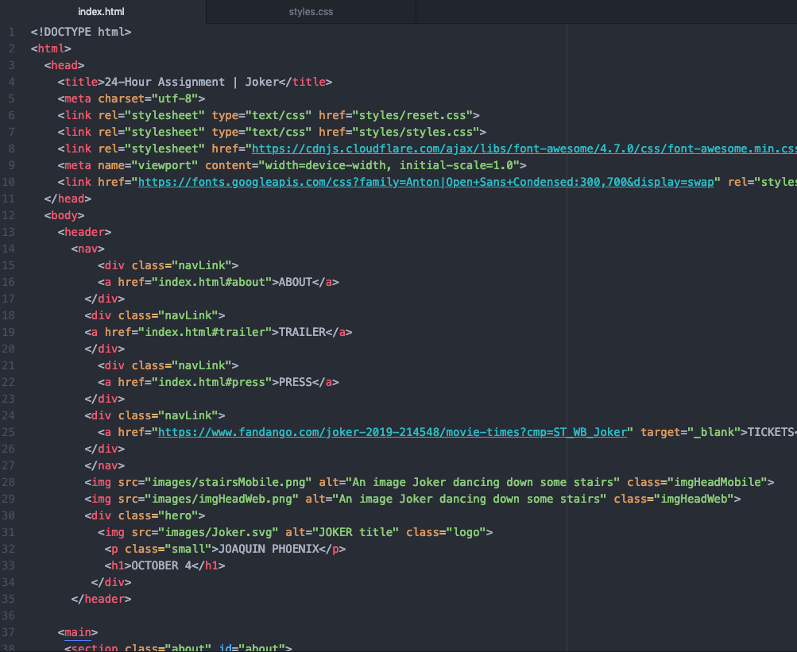

Designing and coding a one-page website for an upcoming movie within 24 hours.
The Problem
For this project, I was asked to mimic a take-home assignment and was given 24 hours to design and code a single-page website for a new movie coming to a nearby theater.
The Solution
A website to find out information on Joker, which was released on October 4, 2019.
I wanted to create a website that was simple, yet encompasing. With information on the release date, trailer and use of several images, I provided the user with the content they need, without the distractions. It's a one-stop destination that will get you in and out and ready to enjoy the movie.
Initial Concept
When I read the prompt, I first checked to see what movies were coming out to start to get inspired. I thought Joker would be a fun title to choose as it has distinct branding and a lot of available resources (film stills, social media sites, etc).
Research
A User Survey and Competitive Analysis was skipped for this project, due to the time constraint and knowing there was already a need in the market. As some informal research, I looked at several websites for other films for inspiration and to discover what information is included or left out.
User Personas
People go to movie websites for various reasons, as we see below in the User Personas. Here are the various goals that our users have:
- Tom is a renowned movie critic. As such, he needs to see all of the top movies coming out and have information about them before the crowds. He needs a simple website to get all of the information about an upcoming film.
- Sue loves to go to the movies. She has an AMC A-List pass, which means she can go to the theater an unlimited amount of times for one monthly price. As such, she’s always looking to see what movies are coming to her nearby theater soon.
User Stories
From my research, I was able to determine the various tasks that were integral for the user, organized by priority level.
High Priority
- Watch a trailer
- Know the movie's title
- Find out the main actor
- Know the release date
- Read the synopsis
Medium Priority
- See artwork
- Know the writer's name
- Know the director's name
- Find out basic info
- Purchase tickets
Low Priority
- See movie ratings
- Read some reviews
Wireframing
Going from quick sketches, to lo-fi to hi-fi versions, I had to quickly design my website, while still following each step.
LoFi and HiFi
Branding
I went to the various social media sites for Joker to see what branding I could find. From their sites and IMDB, I grabbed images and pulled colors to create my various resources. They created their own font, so I chose to use Anton as it was a close match.
Coding: HTML and CSS
From there it was time to put it all together and start translating my designs into HTML and CSS. I was able to utilize framework from my portfolio site and other assignments to create my finished site. I started with my mobile design first, then added two breakpoints at 600px and 900px for a responsive design.
Takeaways
- This was the first time that I've had a hard deadline with my UX projects and as such, I learned to quickly work through UX steps while constantly keeping the deadline in mind.
- I gained further confidence in my HTML and CSS skills, as I was able to code my design without having to reach out for help.
- It would have been nice to have been able to receive the resources and design guidelines from the client as my logo mockup and font are not exactly what they used in their marketing.
- I fully utilized the mobile-first design and coding approach to form best-practice habits.
- The embed code from YouTube, isn't set up to be responsive. I had to work to get the viewer to be responsive, but it would have been ideal for the height to be shorter on the mobile version.
- It was a challenge to get all of the responsive tweaks done in such a short amount of time. Normally, I would have liked to be able to test and view it on all possible screens. As such, I feel like the hero image isn't as ideal on some mobile devices.